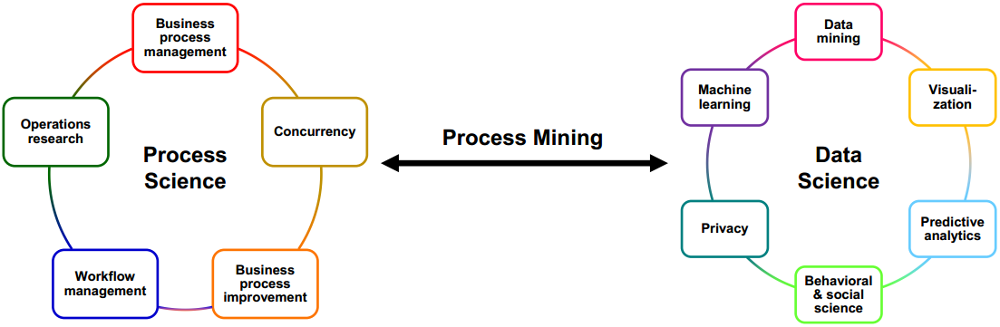
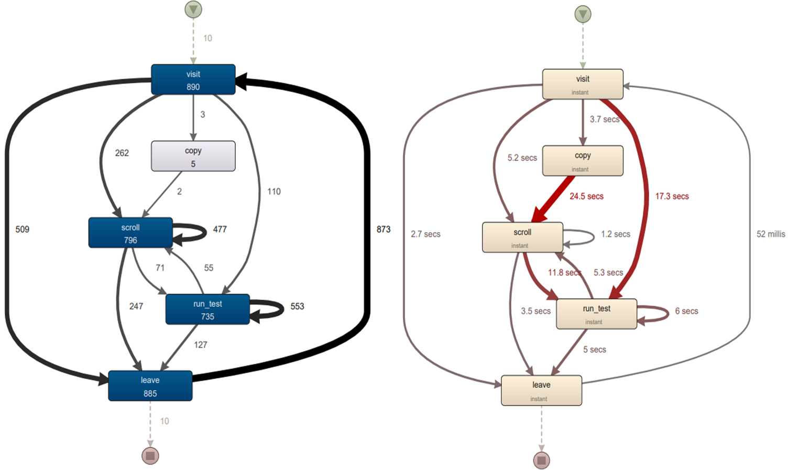
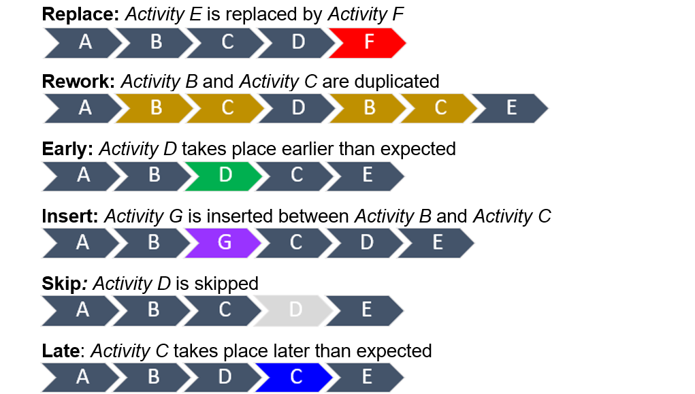
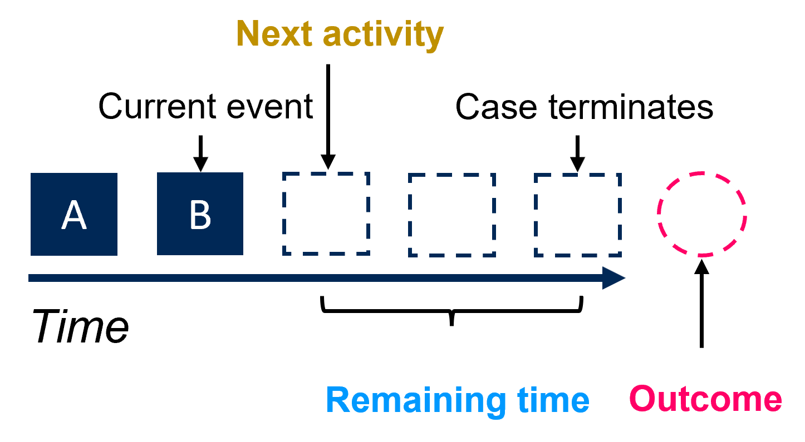

Our lab aims to solve real-world business problems by advancing research in
process science, data science, and process mining which bridges two disciplines.


Process model discovery is the technique of extracting and constructing a comprehensive model of a business process from event logs. This involves analyzing data from information systems to uncover the actual sequence of activities within a process, rather than relying on preconceived notions or manual modeling. Our lab not only utilizes the existing process model discovery techniques to extract a process model out of event logs of companies or organizations, but also develops novel process model discovery techniques.
Process conformance checking is a method used to compare an actual business process, as recorded in event logs, with a predefined reference model to determine the extent to which the real-life process adheres to the expected model. This technique is part of the broader field of process mining and aims to identify deviations, ensure compliance, and enhance process performance. Process anomaly detection is the technique of identifying unusual or unexpected patterns in business process executions that deviate from the standard or expected behavior. This involves analyzing event logs or real-time process data to detect anomalies that may indicate issues such as errors, fraud, inefficiencies, or other irregularities. Our lab not only utilizes the existing process conformance checking / anomaly detection techniques, but also develops novel conformance checking / anomaly detection techniques.


Predictive process monitoring is the practice of using data analysis and machine learning techniques to anticipate future states (e.g. next activity, remaining time, outcome) of business processes based on historical and real-time data. The goal is to predict potential issues, performance bottlenecks, or other significant events before they occur, allowing organizations to take proactive measures to ensure process efficiency and effectiveness. Our lab mainly focuses on developing event log encoding techniques, utilizing and modifying various machine / deep learning techniques tailored for predictive process monitoring tasks.